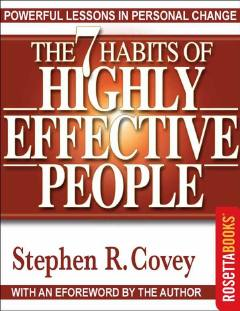

T7Shaxsiy va kasbiy samaradorlikni oshirish uchun yetti muhim tamoyil to'plami.
Ushbu kitob shaxsiy va kasbiy samaradorlikni oshirish uchun yetti tamoyilni o'z ichiga olgan yaxlit yondashuvni taqdim etadi. Muallif Stephen R. Covey xarakter axloqi va o'zaro bog'liqlik tamoyillariga asoslangan holda muvaffaqiyatga erishish yo'llarini tushuntiradi.